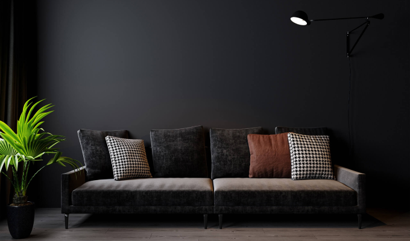

Компания Furman возникла в 1994 году. Производственные мощности располагаются в Беларуси непосредственно вблизи столицы. За время существования бренд заслужил доверие покупателей, получил лидерство на потребительском рынке, стал символом европейского качества и стиля.
Продукция фабрики – это не стандартные конвейерные диваны. Каждая позиция товара тщательно разрабатывается и продумывается. Весомый вклад в это сделал дизайнер Алесь Чернявский, занимающийся разработкой изделий. Благодаря такому творческому подходу мы смогли воплотить в диванах инновационные решения, смелые и интересные идеи, довести до совершенства конструкцию и дизайн, улучшить практичность, эргономичность и функциональность.
Наша компания в своей деятельности следует нескольким основным принципам:
Ассортимент продукции от фабрики Furman – это не только диваны и диваны-трансформеры. Мы предлагаем широчайший выбор разнообразной мебели для дома: кровати и прикроватные тумбы, кресла, пуфики и банкетки, комоды и туалетные столики, различные стеллажи и пеналы, обеденные столы и журнальные столики, стулья в ассортименте (обеденные, мягкие, полубарные).
Производство мебели осуществляется из материалов, отвечающих стандартам качества и экологичности. Для деревянных элементов используется массив ценных древесных пород, который предварительно обрабатывается на специализированных станках. Мягкое наполнение и ткани – это качественная продукция европейского производства.
К покупке доступна уже готовая продукция, присутствующая на складе. Также предлагаются модели, сделанные по вашим индивидуальным заказам. Клиент может выбрать изделие в любом цвете и размере, подобрать желаемый по оттенку и фактуре материал обивки. Кредо Furman – производство мебели, которой нет аналогов по качеству и дизайну!